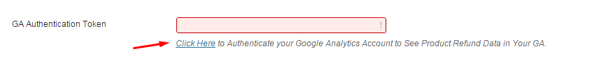
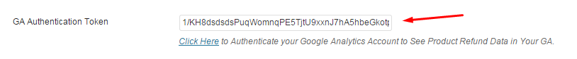
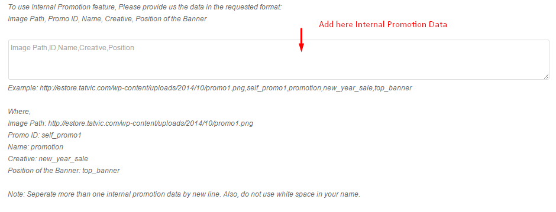

Actionable Google Analytics is a WooCommerce Plugin which allows you to use some of the most important features of Universal Analytics including Enhanced Ecommerce & User ID Tracking. Additionally, the Plugin supports I.P Anonymization, Product Refund, Content Grouping, Form Field Tracking & 15+ Custom Dimensions & Metrics.
By using our Plugin you save hours of time in implementing complex Google Analytics code and instead focus on generating Actionable insights from your data.
Quick & Easy Installation
Access to 9 Reports of Enhanced Ecommerce
Shopping Behaviour Report
Checkout Behaviour Report
Product Performance Report
Sales Performance Report
Product List Performance Report
Internal Promotion Report
Order Coupon Report
Affiliate Code Report
Learn about how different devices are used by same user & how it drives purchase
Learn more about which products are refunded more often & take action for such products
Be in legal compliance by using I.P Anonymization which is important for EU countries
Learn more about which type of & what level of discounts generates conversion
Understand which payment methods are most widely used ?
Learn more about time taken to make purchase decision by customer
Custom Dimensions:
Stock Status: Learn whether the product is in stock or out of stock. Keeping track of out of stock products will prevent you from acquiring traffic on the out of stock product URLs.
Page Type: Identifies the type of the page. Example - Category Page, Product Page, etc. Helps you to compare the performance of different site sections.
Product Discount:. Getting Discount data in GA can actually help you in strategizing the discounts by analyzing the impact it is causing on the product demand and other key metrics
Payment Method: Get insights into which Payment method (paypal, credit card, etc) is most popular for your store, which generates higher AOV and Transactions
Shipping City & Billing city: Integrates the billing city & shipping city data directly into your GA. It Helps you learn about product demand using insights on Shipping & billing cities.
Weekday: Learn whether a transactions was completed on weekday/ weekend. Helps you in comparing Weekdays v/s Weekend Performance
Local timeslot of the day: Learn the local time slot during which maximum transactions happens on your store. This can help you improve your marketing activities across different geo locations.
User Type: Using this custom Dimension you will be able to differentiate users based on their checkout method. It will help you understand the popular checkout method of your store.
Sequence at Product Page: Tracks the sequence in which products pages are viewed in a session. It will give you the idea as to which products are viewed can be offered as a part of recommendation.
Add to Cart Button Position: The following dimension helps you understand how ‘Add to Cart’ button’s position impacts your CTR. Compare ‘Add to Cart’ buttons position above the fold & below the fold to take important design decisions.
No. of Product in Stock: Using this custom dimensions you will be able to learn the stock availability of the product right into your Google Analytics. Understand how showing stock quantity of the products is impacting its sales.
Time Taken to make Purchase: Learn the time taken by users to make purchase after landing on your store. It will help you make real time offers to users.
Time Take to add Product to Add to Cart: Learn the time taken by users to add product to cart after arriving on the product page. Insights generated from the data will help you strategize the promotional offers.
Product Size: Track the size of the product in Google Analytics. This will help you analyze the product sales in terms of its size.
Product Review Count: Learn no. of reviews provided by users for each product. It will help you understand the relation between review count & product demand.
Product Review Score: Learn average review score for each product in Google Analytics. Understand if a review score of a product increases the conversion rate or not? Additionally, compare the performance of products with low review score & high review score.
Custom Metrics:
Total monetary value of products viewed: Learn total monetary value of product viewed by a user in a single session. It helps you understand total monetary value of products users generally view & what value of product they end up buying.
No of clicks on Category Pages & Product Pages: Tracks numbers of clicks that happens on Category Page & Product Page. It helps you to understand the user engagement.
Actionable Google Analytics Supports tons of Universal Analytics Features. Hence to use our Plugin it is mandatory that your Google Analytics Property is upgraded to Universal Analytics. Additionally, our Plugin supports Enhanced Ecommerce feature of Universal Analytics and hence your Universal Analytics profile must have Enhanced Ecommerce Enabled.
To Enable Enhanced Ecommerce for your Google Analytics Profile, follow the step 1 of the blogpost.
Actionable Google Analytics supports tons of new features of Universal Analytics. Using our Plugin settings page you can enable/ disable these features.
While most of the features are configured automatically you may need to make some configuration changes in your Google Analytics Account to use User ID Tracking, Content Grouping, Set up Custom Dimensions/ Metrics & Product Refund. Take a this Quick Tour to learn how to make these Configuration Changes.
Explanation of each options of settings page:
1) Email Address: Enter Your Email Address in the field.
Add your email address so that you can:
Receive plugin enhancement update
Receive Quick Email Course on How to generate insights using Enhanced Ecommerce?
2) GA Account ID: Enter Your Google Analytics ID Here.
You can find your Google Analytics ID by logging in to your Google Analytics Account. Your Google Analytics ID Code should look like “UA-XXXXXXXX-X”.
Check out the document to learn how to find your Google Analytics ID.
3) Use our Extension with Your Google Tag Manager (GTM)
If you are using GTM & wants to configure our Plugin with your GTM, check the box & later follow the steps mention in the document to configure.
Alternately, if you do not wish to configure our Plugin with your GTM keep the option uncheck.
Note: This option is only application to users who are using GTM. If you are not using GTM, keep the option uncheck.
4) GA Authentication Token
The following step will authenticate your Google Analytics account. When you authenticate your Google Analytics account, we will be able to verify your Enhanced Ecommerce Implementation. Additionally, it also allows us to add the Product Refund data in your Google Analytics.
Follow the steps below to Authenticate your GA:
Click on “Click Here” as shown in the image below

Sign in to your Google Analytics Account
In the next step, Click “Accept” & your Authentication Token will be automatically generated & saved in your field.
Example:

5) Enhanced Ecommerce Tracking Code: Check the Box to add the Enhanced Ecommerce Tracking code on your store.
6) User ID Tracking
The User ID lets you associate engagement data from multiple devices and different sessions with unique IDs. Enable this feature to get more accurate user count & better analyze the signed-in user experience.
To use the feature Check the Box. Additionally, you will have to Create New Google Analytics View as explained in the Step 1 of the Wizard.
7) Content Grouping
Content Grouping lets you group content into a logical structure that reflects how you think about your store, and then view and compare aggregated metrics by group name in addition to being able to drill down to the individual URL, page title, or screen name.
To use the feature Check the Box.. Additionally, you will have to Create Content Grouping in Your Google Analytics as explained in the Step 2 of the Wizard.
8) Form Field Tracking
Form field tracking helps you analyze the usage of the different fields of your form. Here’s a case study that explains use case of form field tracking analysis.
To use the feature Check the Box.
9) I.P Anonymization
Use this feature to anonymize or stop collecting the I.P. Address of your users. Be in legal compliance by using I.P Anonymization which is important for EU Countries.
10) 404 Error Tracking
Enable this feature to track whenever a user lands on your 404 Error Page of your store. Check the box to start using this feature.
11) Internal Promotion:
Internal Promotion feature of Enhanced Ecommerce lets you see your Internal Promotion data in your Google Analytics. To use the feature, check the box. Additionally, you will have to add the internal promotion data in the following format:
FIxed Format: Image Path, Promo ID, Name, Creative, Position of the Banner

Example:
Where,
Image Path: http://estore.tatvic.com/wp-content/uploads/2014/10/promo1.png
//Add here the URL of the image
Promo ID: self_promo1
// Add here the unique id of the promotion
Name: promotion
// Add here the campaign name of the promotion, e.g. New Year
Creative: new_year_sale
// Add here content of the banner, e.g. deals
Position of the Banner: top_banner
// Add here the position of the banner, e,g. top
Alternatively, if you do not run any internal promotions, you can simply mark it as uncheck.
If you have any questions or query visit us at http://www.tatvic.com/contact & and we’ll get in touch with you in 24 hours.
To help you better Understand the features of our Plugin we’ve produced tons of new content, feel free to browse & learn how you can use Universal Analytics & Enhanced Ecommerce to generate great insights for your store:
Blogpost:
Video:
Additionally, we produce ton of useful content on our blog - tatvic.com/blog around web analytics & e-commerce.
How to verify if you have implemented the Plugin well?
To verify if you have implemented the plugin well, just log in to your Google Analytics account & check if the data is coming well in your Enhanced Ecommerce Reports.
How much time will it take to see the data in Google Analytics?
It generally depends upon the traffic of the store. But in general it may take max up to 24 hours & min 4 hours to see the data in Google Analytics.
Why the plugin does not sent data when I am logged in as Admin?
To avoid sending your own transaction data or sessions data in Google Analytics, our plugin doesn't sent the data to GA when you are logged in. Having said, if you are logged in as Shop Manager, plugin will send the data to GA.
{kind=link}